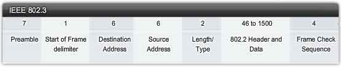

En los sistemas síncronos el receptor se sincroniza con los pulsos de reloj del transmisor, que se incorporan de algún modo al flujo de datos.
Esto habilita al receptor para mantener su sincronización a lo largo de grandes mensajes, que típicamente podrían ser de hasta 4500 bytes (36000 bits).
De este modo se pueden transmitir eficientemente grandes tramas a tasas muy altas de datos.
El sistema síncrono empaqueta muchos caracteres juntos y los envía como un flujo continuo, llamado paquete o trama.

- Preámbulo: Formado por uno o más bytes enviados para que la unidad receptora se sincronice con la trama.
- SFD: El comienzo de la trama delimita la señal para avisar de que comienza la trama
- Destino: La dirección a la que se envía la trama
- Origen: La dirección en la que se origina la trama
- Longitud: El número de bytes en el campo de datos
- Datos: El mensaje propiamente dicho
- FCS: Secuencia de comprobación de la trama, para detección de errores